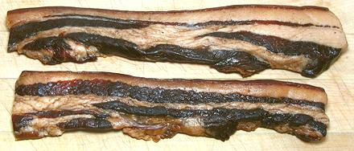

Chinese Bacon

[Lop yok, Laap yuk (China)]
This is an intense product usually cut in small pieces to add to soups
and stir fries as a flavoring element. It is often fairly strongly
flavored with cinnamon and/or star anise. It may be smoked or not. It
is meant to be cooked before being eaten. The photo specimens, purchased
from a large Asian market in Los Angeles, were made by Prime Foods in
New York, so were probably unleaded and contained no melamine.
The larger of the photo specimens was 10-1/2 inches long, 2-1/2
inches wide and 0.8 inch thick. Note that the skin is on and is used
along with the rest. Ingredients: pork belly, sugar, soy sauce, thick
soy sauce, Mei Kwe Lu liquor (distilled from sorghum and roses), salt,
msg, cinnamon, spice, sodium nitrite.
More on Pork Products.
Buying:
This product can be found in most Asian markets.
Tightly vacuum packed, it will generally not be refrigerated. Formulas,
appearance and shelf stability vary widely.
Storage:
Although it is unrefrigerated at the store, I
keep it in the fridge if it will be long before use. Of course, once
opened, it should be tightly wrapped, refrigerated, and consumed within
a week or so as it may be subject to mold.
Prep:
The package will usually tell you to steam it to an
internal temperature of 166°F/75°C before using, but Chinese bacon
affectionado Chichi Wang says it's much better to soak it in cold water
for 5 hours or up to a day for much better softening. Then cook it in
whatever recipe you wish to use.
Cooking:
This product is generally cut into small pieces
and included in stir fries, salads, with vegetables or whatever. Just do
the soak ahead of time so it's reasonably soft.
Subst:
Chinese sausage, which are commonly available, will
probably do, but there are some Chinese ham pieces cured much like this
bacon that would be better, if available.
ap_baconcz* 120808 - www.clovegarden.com
©Andrew Grygus - agryg@clovegarden.com - Photos
on this page not otherwise credited © cg1
- Linking to and non-commercial use of this page permitted